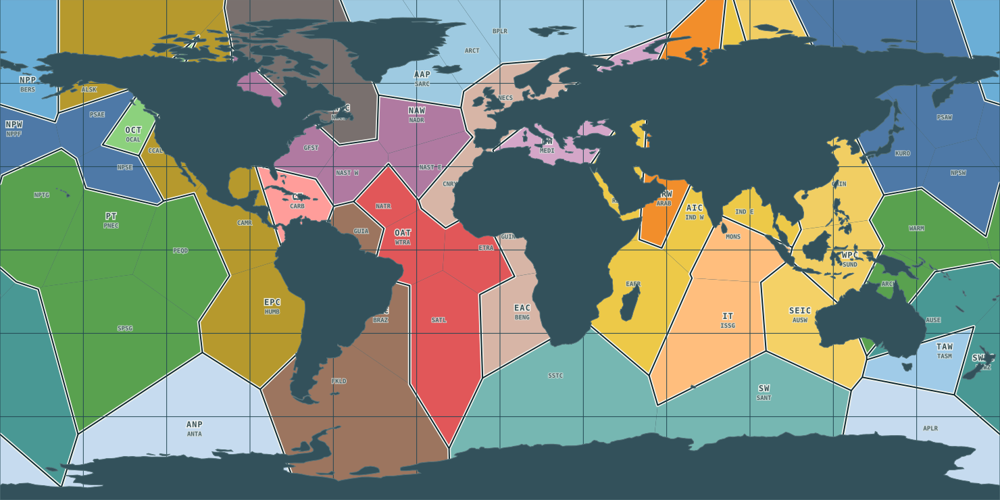

Follow a current
Start with the world, choose a current, and zoom to its route and map card.
Open the current atlasOcean States of the World · research preview
Get to know the currents that carry water across ocean basins and the eddies that swirl within them. Follow a route, open its record, and see what we know about its size and changing shape.
An evolving atlas, with sources and limits beside the evidence. You do not need to know oceanography to explore it.

Start with the world, choose a current, and zoom to its route and map card.
Open the current atlasFind a regional link to NASA's animations. The films show modeled motion, rather than measurements of the atlas features.
Find a NASA ocean viewExplore how current lengths are estimated and what part of the current each estimate describes.
Explore current length estimatesA current is a flow of water. An eddy is a rotating patch of water. Both can change with place and time, so one number rarely tells the whole story.
OSW uses editorial ocean regions as addresses for exploring the ocean. They are not political territories or fixed current boundaries.
A locator marks a place to start reading. A drawn reference route is an approximation with stated conventions. A dated observation or model result describes its own time and place. Missing evidence means unknown or unassessed, not zero.
This is a research preview. Evidence coverage varies by feature and measurement. Depth profiles, seasonal variation, and compatible volume estimates remain active work. Check the source, date, scope, and method attached to a record before comparing numbers.
For a closer look: evidence coverage · advanced query workbench · source register.